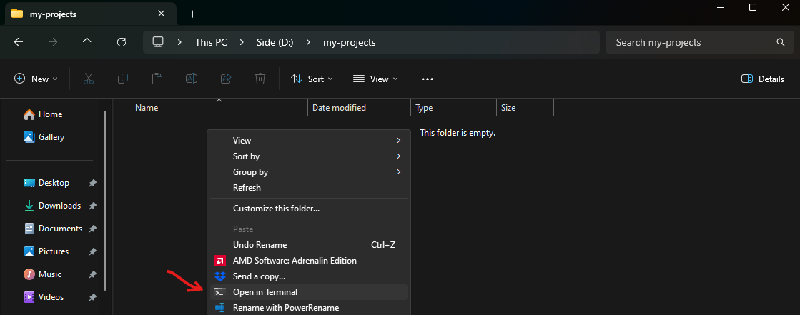
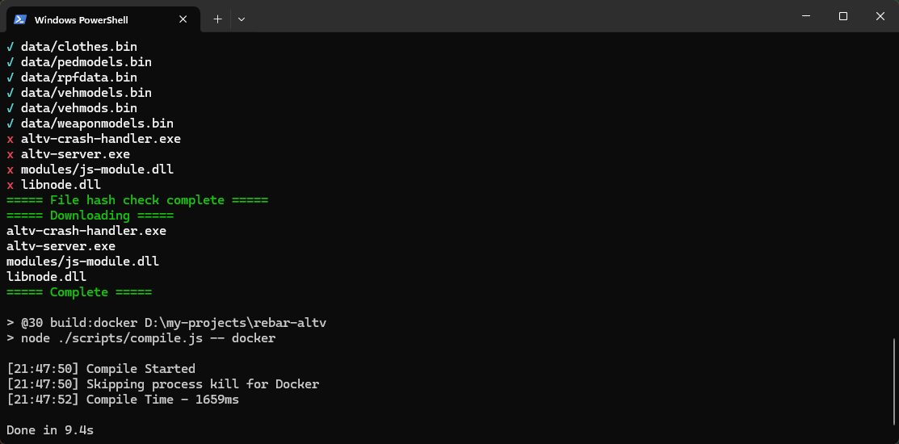
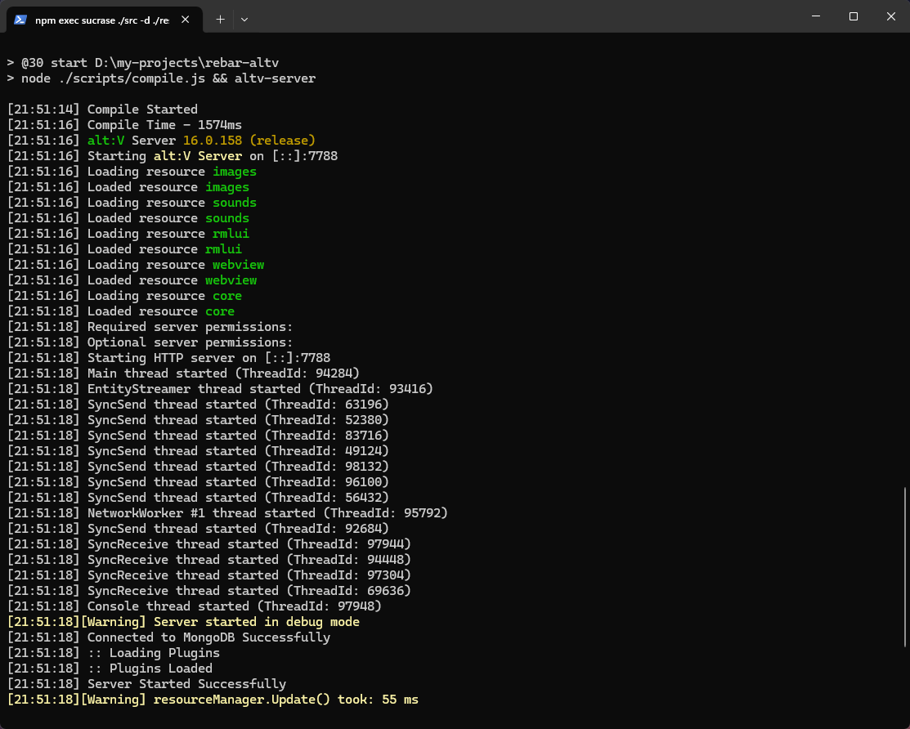
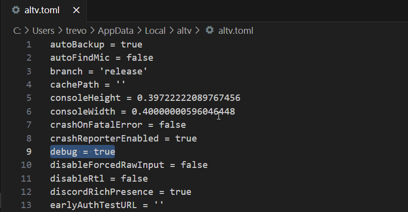

#
Chapter 3. Project Setup
Now that we've obtained all the necessary programs to get started with development, we can begin with setting up our project.
#
Cloning the Repository
Cloning a repository means you're going to download some source code from a GitHub website, in the case here we'll be cloning the Rebar repository into some location on our computer. For the sake of this book, I'm cloning the repository into a separate disk D: drive under the location D:/projects/rebar-altv.
Right-click the base folder where you wish to clone the repository, and click Open in Terminal. This will open the terminal in the current directory that you have open.
**Ensure you do not clone it to any folders with spaces, or special characters. **

Now run the follow command in the Terminal to clone the repository.
git clone https://github.com/Stuyk/rebar-altv/You may or may not be prompted to make a GitHub account, if you are. Make one and sign into it.
#
Navigate to Repository
In the same Terminal you are going to cd into that directory.
cd means you are going to navigate into the directory from the Terminal.
#
Install Dependencies
You are now going to use the Terminal to install dependencies for Rebar.
pnpm installIf you hit an error during any of this setup, please visit the Rebar Discord. You can find a link to the Discord on the main Rebar page.
If successful, you will install and do the following with one command:
- npm packages used by node.js
- alt:V Server Binaries for Windows
- Compile the Code Once
Here's an example of a successful installation.

#
Running the Server
With that all said and done, we will be using the Terminal to Start and Stop the server. We want to verify that everything is loading correctly throughout the entire framework.
We'll be using dev mode to ensure the server starts. Use your Terminal to run the following command.
pnpm devYour console should output a similar output to what you see below, if all resources are Loaded then you are successful!
Additionally, when you start modifying source code your development server will automatically reload and reconnect your game.

#
Configuring alt:V Client
When you are working on a server, you are more often than not going to want to run your alt:V client with debug set to true.
Open your alt:V Client folder where it's installed. Usually it's under the following path:
C:\Users\your-username-here\AppData\Local\altvOpen altv.toml in VSCode, you can do this by right-clicking the file and clicking Open with Code.

Make sure to SAVE THE FILE and then restart your alt:V client.
#
Connecting to the Server
Once you have the server running in the above steps, you can Direct Connect to your server with the following IP by opening the alt:V Client and using the in-game interface to connect to your server.
Additionally, you may not see anything when you connect, or be able to do anything. Rebar does not spawn you into the game, and we just want to verify that we can connect to the server.
127.0.0.1:7788If you are having trouble connecting, visit the alt:V Discord on the main website, and ask for help
#
Shutting Down the Server
In the same terminal where you are running the server, click on it, and simply press CTRL + C multiple times to kill the server.
If you need to clear the console of all text you can use CTRL + L to clear the console.
#
Recap
When we want to run the server we open a Terminal and type:
pnpm devWhen we want to shut down the server we press CTRL + C while focused on the Terminal.
When we want to clear the Terminal we press CTRL + L while focused on the Terminal.
Additionally, if you wish to run the server in production mode you can use:
pnpm start